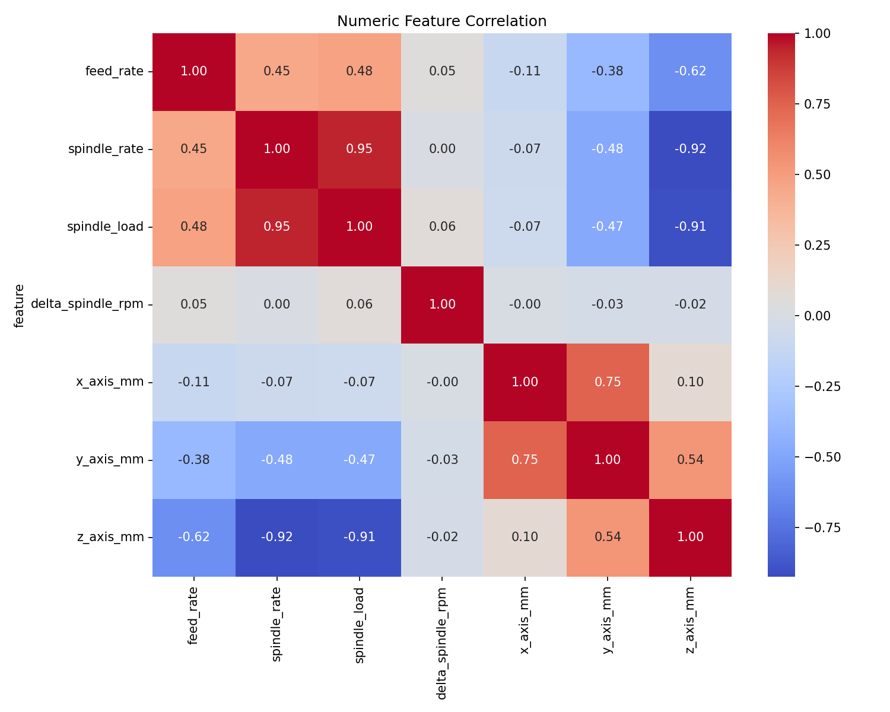
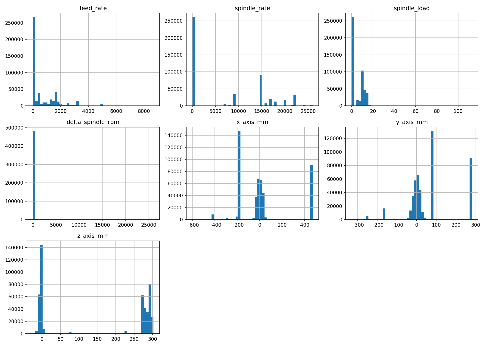

MCT 설비 데이터 기반
AI 예지보전 프로토타입
정상 설비 데이터를 공구별로 정량화하고, 가상 이상 시나리오를 생성하여 XGBoost 기반 이상 탐지 모델을 구축한 과정
프로젝트 개요
이 보고서는 “실제 고장 데이터가 거의 없는 설비에서, 어떻게 이상 탐지 AI 파이프라인을 끝까지 만들어냈는가”를 단계별 판단 근거와 함께 기록한 기술 문서입니다.
한 문단 요약
기업에서 제공받은 MCT(머시닝 센터) 설비 로그 31일치를 파싱·검증하여 481,648행의 정제 데이터를 만들었습니다. 그중 실제로 가공이 진행 중인 219,195행의 절삭 구간을 정의하고, 공구 19종별로 정상 운전값이 크게 다르다는 점을 확인해 공구별 정상 기준표를 만들었습니다. 그런데 실제 알람은 2건뿐이었고 그마저도 설비가 멈춘 상태에서 기록되어 지도학습에 쓸 실제 고장 라벨이 부족했습니다. 그래서 실제 정상 절삭 10분 구간 462개를 seed로 복사하여 공구별 정상 기준 대비 상대적으로 열화하는 가상 이상 3종을 생성하고, 1분 Window · Feature 14종으로 요약한 뒤 XGBoost로 학습했습니다.
현재 모델의 성능 수치는 가상 이상 시나리오 기반 프로토타입 검증 결과입니다. 학습·검증·시험 데이터가 모두 동일한 방식으로 생성된 synthetic anomaly이므로, 실제 설비 고장 예측 정확도로 해석할 수 없습니다. 현재까지 검증된 것은 “파이프라인이 설계대로 동작한다”는 사실입니다.
전체 데이터 / AI 파이프라인
각 단계를 클릭하면 그 단계에서 실제로 무엇을 했는지 볼 수 있습니다.
이 보고서가 답하는 질문
자주 쓰는 용어 미리보기
원본 데이터 — 기업 MCT 로그는 어떤 형태였는가
설비 1대가 5~6초마다 남긴 텍스트 로그. 측정 1회가 13줄에 나뉘어 기록되어 있었습니다.
파일 구성
Data.log_20260501.log ~ Data.log_20260531.log
31개 파일 · 총 6,261,455줄 · 인코딩 CP949
data/raw/ (wc -l)
설비
MCT_MCT3호 1대
481,648행 전부 동일 설비이며, 다른 설비 데이터는 포함되어 있지 않습니다.
reports/machine_counts.csv
수집 주기
평균 5.56초 · 중앙값 5.42초
최소 4.18초 / 최대 208.23초
reports/interval_summary.csv
원본 로그 실제 예시 (측정 1회 = 13줄)
FEED_RATE 줄에서 하나의 측정 묶음이 시작되고, STATUS 줄에서 끝납니다. STATUS 줄만 형식이 달라서 그 안에 STATUS AUT_MODE RUN_MODE EMERGENCY ALARM ERROR_MESSAGE 6개 항목이 한 줄에 들어 있습니다. 이 규칙 덕분에 “FEED_RATE에서 시작해 STATUS에서 한 행 확정”이라는 단순한 파싱 규칙이 성립합니다.
13줄 → CSV 1행
원본 13줄
FEED_RATE
SPINDLE_RATE
X_AXIS
Y_AXIS
Z_AXIS
CURRENT_TOOL
X LOAD
Y LOAD
Z LOAD
SPINDLE_LOAD
SPINDLE_RPM
DELTA_SPINDLE_RPM
STATUS ← 여기서 1행 확정
변환 후 CSV 1행 (21개 열)
timestamp, machine, feed_rate, spindle_rate, x_axis, y_axis, z_axis, current_tool, x_load, y_load, z_load, spindle_load, spindle_rpm, delta_spindle_rpm, status, aut_mode, run_mode, emergency, alarm, error_message, source_file
6,261,455줄 → 481,648행. 값에서 % 기호와 공백을 제거해 숫자로 만들었습니다.
데이터 전처리 — 원본 로그에서 mct_clean.csv까지
파싱 → 품질 검증 → 파생 열 추가. 원본 센서값은 하나도 삭제하거나 수정하지 않았습니다.
① parse_mct_log.py — 파싱
- FEED_RATE를 만나면 새 측정 묶음 시작
- STATUS를 만나면 CSV 한 행으로 확정하고 다음 묶음 준비
- 숫자값에서 % 기호와 공백 제거 (
X LOAD: 4 %→4) - STATUS 줄을 status / aut_mode / run_mode / emergency / alarm / error_message 로 분해
- CP949로 읽어 UTF-8(BOM)로 저장 → 중간 산출물 mct_parsed.csv 생성
output/mct_parsed.csv는 파싱 과정에서 생성되는 중간 산출물이며,
현재 output 폴더에는 존재하지 않습니다. 재현하려면 parse_mct_log.py를 다시 실행해야 합니다.
② validate_mct_data.py — 품질 검증
reports/ 폴더 CSV + output/mct_clean.csv 재계산
error_message의 결측 481,632건은 알람이 없어서 오류 메시지가 존재하지 않는 정상적인 결측입니다. interval_seconds의 결측 1건은 설비의 첫 관측치라서 이전 값이 없기 때문입니다. 즉 실제로 값이 유실된 열은 없습니다.
③ build_clean_dataset.py — 최종 분석용 데이터
시간 정렬 후 설비별 수집 간격을 계산하고, 스케일 팩터 10000이 적용된 원본 좌표를 mm 단위로 변환했으며, 분석용 상태 플래그 5종과 통합 플래그 1종을 추가했습니다. 원본 좌표 열은 추적·검증용으로 그대로 보존했습니다.
추가된 파생 열
- interval_seconds — 같은 설비 직전 관측과의 초 차이
- x_axis_mm / y_axis_mm / z_axis_mm — 원본 좌표 ÷ 10000
상태 플래그 (분석용 보조 표시)
“원본 센서값을 임의로 삭제하거나 수정하지 않았다.”
파싱 후 행 수 481,648 → 최종 clean 행 수 481,648. 코드 안에 행 수 검증 로직이 들어 있어 정제 과정에서 행이 바뀌면 즉시 오류를 내도록 되어 있습니다. 스핀들 부하 100% 초과값이나 aut_mode 이상값도 파싱 오류로 확정할 근거가 없어 원본값을 보존하고 플래그로만 구분했습니다.
has_event(97행)는 알람·RESET·스핀들 과부하·비정상 수집 간격을 OR로 묶은 분석용 이벤트 보조 플래그입니다. 실제 설비 고장 여부를 나타내는 정답 라벨이 아니며, 이 프로젝트에서 학습 라벨로 사용하지 않았습니다.
원본은 한 번의 측정이 13줄에 나뉘어 기록되는 텍스트 로그였습니다. FEED_RATE에서 묶음이 시작되고 STATUS에서 끝나는 규칙을 이용해 626만 줄을 481,648행의 표로 변환했습니다. 이 과정에서 특이값을 임의로 지우지 않고, 파싱 전후 행 수가 정확히 일치하는지 코드로 검증했습니다.
EDA — 정상 설비가 평소 어떻게 움직이는지 확인
EDA는 AI를 만들기 전에 데이터가 실제로 어떻게 움직이는지 확인하는 과정입니다. 여기서 얻은 관찰이 이후 모든 설계 판단의 근거가 됩니다.
발견 1 — 데이터의 절반은 “멈춰 있는 상태”였다
왜 이것이 중요한가
STATUS_READY가 238,313행(49.5%)으로 거의 절반입니다. READY 구간은 회전수·이송속도·부하가 모두 0에 가깝기 때문에, 전체 데이터로 평균이나 중앙값을 내면 “정지 상태”가 통계를 지배합니다.
실제로 전체 데이터 기준 feed_rate·spindle_rate·spindle_load의 중앙값은 모두 0입니다. 이 값은 “정상 절삭 상태”를 전혀 대표하지 못합니다.
STATUS_ERROR는 16행뿐입니다.
발견 2 — 전체 통계와 절삭 통계는 완전히 다른 데이터다
아래 표는 모집단을 바꿔가며 같은 센서의 통계를 본 것입니다. 같은 spindle_load인데 전체 기준 중앙값은 0, 절삭 기준 중앙값은 11입니다. 이 둘을 섞어서 설명하면 안 됩니다.
① 모집단 오염: 전체 데이터에는 READY/정지 상태가 49.5% 섞여 있어, 전체 기준 통계는 정상 절삭 상태를 대표하지 못합니다.
② 극단값 민감성: min/max는 단 한 개의 spike에도 값이 바뀝니다. 예를 들어 절삭 구간의 rpm_error는 P99가 6인데 max는 5,339입니다. max를 정상 범위로 쓰면 “거의 모든 것이 정상”이 되어 버립니다.
그래서 정상 상태를 정량화할 때 mean · median · std · P95 · P99를 함께 보았고, “min ~ max = 정상 범위”라고 단순 정의하지 않았습니다.
발견 3 — 변수 간 상관관계
읽는 법
- spindle_rate ↔ spindle_load = +0.947
회전 지령이 높을수록 부하가 높게 기록됨 - spindle_rate ↔ z_axis_mm = −0.924
Z축이 내려가(가공 위치) 있을 때 회전이 걸림 - spindle_load ↔ z_axis_mm = −0.905
- x_axis_mm ↔ y_axis_mm = +0.747
상관관계는 인과관계가 아닙니다. 위 관계는 운전 상태와 가공 위치가 동시에 변하기 때문에 나타나는 동반 변화일 수 있습니다.
전체 상관행렬 · EDA 산출 이미지 보기


발견 4 — X/Y/Z 축 부하값이 전 행에서 동일했다
x_load = y_load = z_load 인 행이 —행, 즉 전체 481,648행 100%입니다. 원본 로그를 직접 대조한 결과에서도 세 값이 동일하게 기록되어 있어 파싱 오류가 아니라 원천 데이터의 특성으로 판단했습니다.
다만 세 값이 같은 물리적 이유를 우리가 확정한 것은 아닙니다. 설비가 축부하를 개별 측정하지 않고 대표값 하나를 세 항목에 동일하게 내보내는 것인지, 수집 설정의 문제인지는 기업 확인이 필요한 미해결 항목입니다.
→ 이 불확실성 때문에 뒤의 가상 이상 생성 단계에서 X/Y/Z_LOAD를 임의로 함께 변형하지 않았습니다. 물리적 의미를 모르는 값을 건드리면 “그럴듯한 이상”이 아니라 “근거 없는 조작”이 되기 때문입니다.
실제 절삭 구간 — RUN이라고 다 가공 중인 것은 아니었다
이상 탐지의 기준이 될 “정상”을 정의하려면, 먼저 진짜로 깎고 있는 순간만 골라내야 했습니다.
STATUS_RUN 내부 4분면 실측
부하로 검증하기
RPM=0 계열 23,263행의 스핀들 부하 평균은 0.00 ~ 0.01입니다. 스핀들이 돌지 않으니 절삭 저항도 없습니다. 이것은 “가공 중 이상”이 아니라 단순히 가공 중이 아닌 상태입니다.
반대로 RPM>0 & FEED>0 구간은 부하 평균 11.30, 중앙값 11로 일관된 절삭 부하가 관측됩니다.
run_mode는 RUN 전체가 값 3으로 동일해서 구분에 쓸 수 없었고, 결국 RPM·FEED 값 자체로 판정할 수밖에 없었습니다.
output/mct_clean.csv 재계산 · model_eda.ipynb Cell 2
애매했던 861행 — 이상으로도, 정상으로도 단정하지 않았다
RPM>0 & FEED=0 인 861행은 스핀들은 도는데 이송이 멈춘 상태입니다. 부하 평균이 21.44로 높고 최대 113까지 나와서 “이상 아닌가?” 하는 의심이 들었기 때문에 별도로 분석했습니다.
정상적인 전환으로 보이는 근거
- 559개 연속 구간 중 549개가 1행짜리 (지속시간 중앙값 0초)
- 구간 직후 FEED>0 비율 95.9% → 곧바로 가공이 이어짐
- 가장 흔한 공구는 1번(426건)으로, 특정 공정에서 반복되는 패턴
이상일 가능성을 배제할 수 없는 근거
- 전체 스핀들 과부하 60행이 100% 이 구간 안에 존재
- 부하 P95 = 106, 최대 113 (절삭 구간 최대 85보다 높음)
- 최장 구간은 274행 / 1,479.7초로 “순간”이라 보기 어려움
“이상으로 단정할 근거도 없고, 일반적인 정상 절삭에 넣기도 애매하다.” 그래서 이 861행을 정상 baseline 산출 모집단에서 제외했습니다.
이것은 데이터 삭제가 아닙니다. 861행은 mct_clean.csv에 그대로 남아 있으며, “AI가 배울 정상의 정의”에서만 빠진 것입니다. 실제 고장 이력을 확보하면 이 구간부터 다시 검토할 계획입니다.
처음에는 STATUS_RUN 전체를 가공 데이터로 사용할 수 있을 거라 생각했습니다. 그런데 RUN 상태 안에도 RPM이나 FEED가 0인 정지·전환 구간이 약 10% 존재했고, 그 구간의 스핀들 부하는 사실상 0이었습니다. 그래서 RUN이면서 RPM과 FEED가 모두 0보다 큰 219,195행을 실제 절삭 모집단으로 정의했습니다. RPM은 도는데 이송만 멈춘 861행은 과부하가 전부 여기에 몰려 있어서, 이상으로 단정하지 않고 정상 기준 산출에서만 제외했습니다.
공구별 정상 기준 — 하나의 임계값으로는 불가능했다
같은 “정상 절삭”이라도 공구마다 정상 운전값이 크게 달랐습니다. 이 발견이 프로젝트 설계 전체를 바꿨습니다.
공구 19종의 정상 운전점 비교
output/mct_clean.csv 재계산 · model_eda.ipynb Cell 3
“같은 정상 절삭이라도 공구마다 정상 운전값이 크게 다르다.”
RPM 중앙값은 6,990 ~ 25,990으로 약 3.7배 차이, LOAD 중앙값은 6 ~ 17, FEED 중앙값은 148 ~ 2,708로 벌어집니다. 따라서 “LOAD > 20이면 이상”, “RPM > 15000이면 이상” 같은 단일 전역 임계값을 적용할 수 없었습니다. 공구 12(정상 LOAD 17)는 과탐이 되고, 공구 2(정상 LOAD 6)는 미탐이 됩니다.
normal_baseline_by_tool.csv — 공구별 정상 분포 참고표
절삭 모집단에서 공구별로 값 기준(median/P95/P99)과 변동성 기준(1분 롤링 std의 P95)을 계산해 표로 저장했습니다. 1분 롤링은 하루 단위로 그룹핑하여 자정 경계를 넘지 않도록 했습니다.
normal_baseline_by_tool.csv는 실제 정상 절삭 데이터에서 관측된 공구별 정상 분포의 참고 기준이며, 정상 대비 상대적 이탈을 계산하기 위한 baseline입니다.
P95나 P99를 넘으면 무조건 고장이라는 의미가 아닙니다.
실제로 CSV 파일의 basis 열에도
normal_cutting(RPM>0&FEED>0); reference_only_not_threshold
라고 “참고용이며 임계값이 아님”이 데이터 자체에 기록되어 있습니다.
공구 19종 전체 정상 baseline 상세 테이블
reports/model_eda/normal_baseline_by_tool.csv (19행 × 20열)
표본이 부족해 기준을 믿을 수 없었던 공구 3종
표본 500행 미만인 공구는 insufficient_data = True로 표시했습니다.
특히 공구 20은 절삭 데이터가 단 2행입니다. 이 2행으로 계산한 P95·P99는 통계적으로 아무 의미가 없습니다. 실제로 공구 20의 rpm_std_1min_p95는 3,658로 다른 공구(대부분 0.00)와 비교할 수 없는 값이 나왔습니다. → 이 3종은 가상 이상 생성 대상에서 제외했습니다.
절삭 데이터에는 공구가 19종 있었는데, 공구2는 정상 RPM이 약 6,990이고 공구12는 약 25,990으로 정상 운전점 자체가 크게 달랐습니다. 그래서 전체에 하나의 임계값을 적용하는 방식은 처음부터 불가능했습니다. 대신 공구별로 정상 분포의 중앙값과 P95, P99, 그리고 1분 변동성을 표로 정리해서, 이후 모든 판단을 "이 공구의 평소 대비 얼마나 벗어났는가"라는 상대 기준으로 바꿨습니다. 다만 이 표는 참고 기준이지 고장 임계값이 아니라는 점을 파일에도 명시해 두었습니다.
RPM_ERROR — 지령과 실제의 차이를 신호로 만들다
두 개의 거의 똑같은 변수에서, 의미 있는 하나의 신호를 뽑아낸 과정입니다.
실측 요약 (절삭 구간)
정확히 0인 비율은 4.3%뿐이지만 |RPM_ERROR| ≤ 5가 98.4%입니다. 즉 평소에는 “0은 아니지만 아주 좁은 범위에 고정”되어 있습니다. 이런 변수는 큰 이탈이 발생했을 때 신호 대비 잡음이 매우 유리합니다.
공구별 정상 RPM_ERROR 중앙값은 −4, −2, −1, +1, +2, +4 등으로 서로 다릅니다. 예를 들어 공구 13·14·15·16은 정상 상태에서도 항상 −4 근처이고, 공구 1은 항상 +4 근처입니다.
그래서 “RPM_ERROR가 0에서 얼마나 떨어졌는가”가 아니라 “이 공구의 정상 중심에서 얼마나 벗어났는가”를 기준으로 사용했습니다. 이 발상이 뒤에서 rpm_error_vs_normal Feature로 이어집니다.
RPM_ERROR가 사용된 4곳
- model_eda.ipynb — 공구별 RPM_ERROR 분포 프로파일링
- normal_baseline_by_tool.csv — rpm_error_median / p95 / p99, rpmerr_std_1min_p95 열
- synthetic_anomaly.ipynb — 가상 이상 3종 중 rpm_error_drift의 생성 기준
- feature_engineering.ipynb — Feature 4종(rpm_error_mean/std/absmax + rpm_error_vs_normal)의 원천
최종 XGBoost의 Feature Importance에서 rpm_error_absmax가 39.39%로 1위를 차지했습니다. 원본 로그에 직접 들어 있지 않고, EDA 과정에서 설계해서 만들어낸 파생 변수가 가장 중요한 신호가 되었습니다.
Window 크기 — 왜 1분이었는가
Window는 센서 데이터를 일정 시간 단위로 묶어서 하나의 학습 샘플로 만드는 방식입니다. 너무 짧으면 통계가 불안정하고, 너무 길면 서로 다른 공정이 한 덩어리에 섞입니다.
model_eda.ipynb Cell 5 (저장된 실행 출력)
Trade-off 정리
- 가장 빠른 탐지 반응
- Window당 중앙 6행뿐 → 표준편차 추정이 불안정
- rpm_std P95 = 0.00 → 변동성 Feature가 사실상 죽음
- Window당 중앙 11행 → std 계산 가능
- 정상 rpm_range P95 = 10 → 정상이 조용함
- 1분이면 충분히 빠른 반응
- 공정 전환 혼입이 비교적 적음
- 30초보다는 탐지가 1분 늦음
- 표본이 많아 통계가 매끄러움 (중앙 32 / 52행)
- 5분 기준 정상 rpm_std P95 = 1,012, rpm_range P95 = 3,000
- 정상 구간에도 공구 전환·RPM 변경이 섞여 정상 변동이 과대평가
- → 이상이 정상 변동에 묻혀 민감도가 떨어짐
“표본 안정성과 빠른 이상 감지 사이의 균형”으로 1분을 선택했습니다. 수집 주기가 평균 5.56초이므로 1분 ≈ 11샘플이라는 계산과도 일치합니다.
Notebook에는 위 비교표를 출력하는 코드와 결과만 있고
“그래서 1분을 선택한다”는 문장은 명시되어 있지 않습니다(모든 셀이 코드 셀).
다만 바로 다음 단계부터 모든 코드가 rolling("60s") /
floor(elapsed/60)으로 통일되어 있어 1분 채택은 확실합니다.
위 Trade-off 서술은 비교표의 실측값에 근거한 해석입니다.
센서가 5~6초마다 들어오기 때문에 한 줄만 봐서는 흔들림을 계산할 수 없어서, 몇 초를 하나로 묶을지를 실측으로 비교했습니다. 30초는 표본이 6개뿐이라 변동성 지표가 0으로 죽어버렸고, 5분은 정상 구간인데도 공구 전환이 섞이면서 RPM 변동 P95가 1,012까지 올라갔습니다. 1분은 표본 11개를 확보하면서 정상 변동 폭이 10 이내로 좁게 유지돼서, 정상은 조용하고 이상은 두드러지는 구간이었습니다. 그래서 1분을 선택했고 이후 모든 단계를 1분으로 통일했습니다.
실제 이상 데이터의 한계 — 배울 고장이 없었다
이 섹션이 프로젝트의 방향을 결정한 분기점입니다.
실제 ALARM은 2건, 그마저도 설비가 멈춘 상태였다
알람 발생 행은 16행이며, 120초 이상 떨어지면 별도 이벤트로 묶었을 때 연속 이벤트 2건이었습니다. 각 이벤트에 대해 30분 전 → 10분 전 → 5분 전 → 1분 전 → 발생 직전 → 발생 중 구간의 RPM·부하·이송속도·RPM_ERROR 변화를 추적했습니다.
이벤트 1 — 2026-05-19 11:02:05 ~ 11:02:31 (공구 2, 6행)
이벤트 2 — 2026-05-29 09:42:12 ~ 09:43:00 (공구 14, 10행)
model_eda.ipynb Cell 7 (저장된 실행 출력)
이벤트 1: 알람 5분 전부터 이미 RPM·부하·이송속도가 모두 0. 알람 시점에 설비는 이미 멈춰 있었습니다.
이벤트 2: 30분 전부터 발생 중까지 전 구간이 0. 절삭행 수도 0입니다.
즉 “부하 상승 → RPM 불안정 → 고장”같은 점진적 열화 패턴을 실제 ALARM 데이터에서 확인할 수 없었습니다. 추가로 발생 5초 전 구간은 표본이 0행이라 관측 자체가 없습니다.
지도학습 라벨 후보 전수 검토
“지도학습에 사용할 신뢰 가능한 실제 고장 label이 부족하다.”
실제 비상(emergency) 0건, error_message는 481,632행이 비어 있어 어떤 고장인지 확인할 방법이 없으며, 정비 이력·고장 유형·제품 OK/NG 데이터는 프로젝트에 파일 자체가 존재하지 않습니다.
여기서 선택지는 둘이었습니다. (A) 라벨을 받을 때까지 중단하거나, (B) 정상을 정밀하게 정의하고 물리적으로 설명 가능한 이상 시나리오를 설계해 파이프라인을 먼저 완성하거나. 이 프로젝트는 (B)를 선택했습니다.
실제 알람은 31일 동안 2건뿐이었는데, 두 건 모두 설비가 이미 정지한 상태에서 기록되었습니다. 알람 30분 전부터 RPM과 부하가 0인 경우도 있어서 센서 기반의 사전 열화 패턴을 학습할 수가 없었습니다. 비상 정지는 0건이고 정비 이력이나 제품 품질 판정 데이터도 없었습니다. 그래서 실제 라벨을 기다리는 대신, 정상 상태를 정밀하게 정량화하고 그 기준을 근거로 가상 이상 시나리오를 설계하는 방향으로 진행했습니다.
Synthetic Anomaly — 실제 정상 구간에서 출발한 가상 이상
랜덤 숫자로 가짜 고장을 만든 것이 아닙니다. 실제 정상 데이터를 복사해, 공구별 정상 기준 대비 상대적으로 열화시켰습니다.
① 실제 정상 절삭 구간을 복사해서 사용 — 배경 신호는 전부 진짜 데이터
② 강도는 공구별 정상 기준에 대한 상대값으로 계산 — 절대값 하드코딩 금지
③ 원본 mct_clean.csv는 절대 수정하지 않음 — 복사본만 변형, 별도 파일로 저장
④ 물리적 의미를 모르는 값은 건드리지 않음 — X/Y/Z_LOAD 미변경
Segment — 연속된 실제 정상 절삭 구간
먼저 절삭 219,195행을 “끊기지 않는 연속 구간”으로 쪼갰습니다. 아래 중 하나라도 발생하면 새 segment로 분리합니다.
① 공구 변경
다른 공구는 다른 정상 상태이므로 같은 구간으로 묶으면 안 됨
② 15초 이상 시간 공백
수집이 끊겼다면 연속된 가공으로 볼 수 없음
③ 비절삭 행 개입
중간에 정지·전환이 들어오면 구간이 끊긴 것
④ 날짜(자정) 변경
자정을 넘는 구간 방지 + split 경계 보장
synthetic_anomaly.ipynb Cell 2 — segment 행 합계 219,195가 절삭 모집단과 정확히 일치함을 코드가 검증
Seed — 가상 이상을 만들기 위해 복사한 실제 정상 가공 구간
Seed 선정 규칙
- 표본이 충분한 공구만 (insufficient_data = False → 공구 7·9·20 제외)
- segment 지속시간 10분 이상
- segment당 최대 1개 seed (같은 구간이 여러 번 쓰이지 않게)
- seed 길이 10분으로 통일
- 한 seed는 하나의 이상 유형에만 사용 (유형 중복 사용 금지)
→ 10분 이상 segment 463개 중 462개가 seed로 확정되었습니다.
10분 Seed의 내부 구조
label = 0
label = 1
label = 1
앞 3분을 원본 그대로 두는 이유는 정상 클래스(label 0)를 실제 데이터로 확보하기 위해서입니다. 또 3~6분을 “점진적 증가”로 만든 이유는 고장이 어느 순간 갑자기 오는 게 아니라 서서히 진행된다는 예지보전의 전제를 반영하기 위해서입니다. warning 구간은 정상과 이상의 경계에 가장 가까워, 모델에게 가장 어려운 구간이 됩니다.
가상 이상 3종
A. load_rise — 부하 점진 상승
가정한 상황: 공구 마모 / 절삭 저항 증가로 스핀들 부하가 서서히 올라가는 열화
변경 대상: SPINDLE_LOAD만 변경. RPM·RATE·X/Y/Z_LOAD는 불변.
# 목표치는 공구별 정상 P99의 2배 (절대값 하드코딩 아님) target = load_p99 * 2.0 goal = load_p95 + (target - load_p95) * r # r = 0→1 램프 noise = N(0, max(load_std_1min_p95, 0.5) * 0.5) # 계단 모양 방지 out[i] = max(base_val, goal) + noise # 원래 값보다 낮아지지 않게
공구 13의 정상 load_p99 = 15 → 목표 30. 실제 생성 결과는 normal 평균 14.8 → warning 22.4 → anomaly 30.0으로 설계와 일치합니다.
B. rpm_instability — 회전 불안정 (평균 유지, 흔들림만 증가)
가정한 상황: 베어링 열화 등으로 회전 자체는 유지되지만 안정성이 나빠지는 상태
변경 대상: SPINDLE_RPM만 변경. 지령 SPINDLE_RATE는 불변.
base_std = max(rpm_std_1min_p95, 3.0) # 정상 std가 0인 공구는 하한 3 amp = base_std * (1 + 14 * r) # 정상 변동의 최대 약 15배까지 확대 wob = 0.7 * wob + 0.3 * N(0, amp) # AR(1): 백색잡음처럼 튀지 않게 rpm[i] = mean_rpm + wob # mean_rpm = 앞 3분 정상 구간 평균
매 행이 독립적으로 튀는 백색잡음은 실제 기계 진동처럼 보이지 않고, “인위적으로 랜덤값을 넣었다”는 티가 납니다. 직전 흔들림의 70%를 이어받는 자기상관 구조를 써서 연속적으로 출렁이는 형태로 만들었습니다.
RPM 평균은 6,990 → 6,985 → 6,983으로 거의 유지되고, RPM 표준편차만 0 → 11.4 → 17.5로 증가합니다. 즉 평균이 떨어지는 게 아니라 변동성만 커지는 형태입니다.
C. rpm_error_drift — 지령 추종 실패
가정한 상황: 제어 계통 이상으로 요구 회전수와 실제 회전수의 오차가 점점 벌어지는 상태
변경 대상: SPINDLE_RPM만 이동. SPINDLE_RATE(지령)는 불변.
halfband = max(|p99 - med|, |p95 - med|, 5.0) # 정상 대역폭, 최소 5 보장 target_err = med + sign(p99 - med) * halfband * 6.0 # 정상 밖 6배 이탈 goal_err = med + (target_err - med) * r rpm[i] = rate[i] - (goal_err + noise) # RATE 유지, RPM만 이동
RPM_ERROR 평균이 normal 1.0 → warning 15.7 → anomaly 31.0으로 이동합니다 (공구 4 정상 중앙 1.0 + 5 × 6 = 31, 설계와 일치).
생성 데이터 검증
물리적 타당성 검사
stage별 실제 이동량 (전체 seed 평균)
output/synthetic_anomaly_data.csv 재계산
rpm_instability의 흔들림 때문에 48행에서 합성 RPM이 26,034로, 원본 절삭 최대값 25,990보다 약 44 RPM 높게 나왔습니다.
자르지 않기로 한 이유: 25,990은 이번 31일 데이터에서 관측된 최대값일 뿐, 설비의 물리적 정격 한계로 확인된 값이 아닙니다. 확인되지 않은 값을 한계선으로 삼아 clipping하면, 오히려 “관측 범위 밖은 존재할 수 없다”는 잘못된 가정을 데이터에 박아 넣게 됩니다.
대가: 48행(전체 48,240행의 0.1%)이 관측 범위를 소폭 벗어납니다. 노트북은 이 사실을 숨기지 않고 검증 셀에서 직접 출력하도록 되어 있습니다. 설비 정격 사양을 기업으로부터 확보하면 이 판단은 재검토 대상입니다.
가상 데이터라고 하면 랜덤으로 만든 것처럼 들리는데, 그렇지 않습니다. 실제 정상 절삭이 10분 이상 끊김 없이 이어진 구간 462개를 그대로 복사해서 seed로 썼고, 변형 강도는 그 공구의 정상 P95와 P99를 기준으로 계산했습니다. 절대값을 코드에 박아 넣지 않았습니다. 앞 3분은 원본 그대로 두어 정상 클래스는 실제 데이터를 쓰고, 3분부터 서서히 나빠지게 만들어 예지보전의 점진적 열화를 반영했습니다.
Data Leakage 방지 — 시험 문제를 미리 보지 않기
Data Leakage는 시험에 사용할 데이터를 학습 과정에서 미리 보는 문제입니다. 이게 발생하면 성능이 아무리 높아도 그 숫자는 의미가 없습니다.
① Random Split을 쓰지 않고 날짜 순서로 잘랐다
같은 날짜, 심지어 같은 가공 구간의 앞부분이 train에, 뒷부분이 test에 랜덤하게 섞여 들어갑니다. 모델은 test와 거의 동일한 패턴을 학습 중에 이미 보게 되고, 성능이 실제보다 훨씬 높게 나옵니다. 시계열 데이터에서는 치명적입니다.
과거 → Train, 그 다음 기간 → Validation, 가장 뒤 기간 → Test. “과거로 학습해서 미래를 맞힌다”는 실제 운영 상황과 같은 구조가 됩니다. 미래 데이터가 학습에 흘러들어갈 수 없습니다.
절삭 segment가 존재한 27일을 70 : 15 : 15로 나눈 결과입니다. synthetic_anomaly.ipynb Cell 3
② segment 단위로 split을 고정했다
segment 분리 조건에 “날짜 변경”이 포함되어 있으므로 segment는 날짜를 걸칠 수 없고, 따라서 split도 걸칠 수 없습니다. 하나의 source_segment_id는 반드시 하나의 split에만 속합니다.
추가로 segment당 seed 1개, seed 중복 사용 금지 규칙을 두어 같은 원본 구간이 train과 test에 동시에 등장하는 경우를 원천 차단했습니다.
③ 상대 기준(baseline)을 Train에서만 계산했다 — 가장 중요한 방지책
EDA용 baseline 참고용
normal_baseline_by_tool.csv
- 31일 전체 데이터로 계산
- 공구별 정상 분포를 이해하기 위한 분석용 참고표
- 가상 이상의 생성 강도 기준으로만 사용
- 모델 Feature 계산에는 사용하지 않음
모델 Feature용 Train baseline 학습용
feature_engineering.ipynb에서 재계산
split == "train" AND stage == "normal"Window 1,089개만 사용- load_center / rpm_std_center / rpmerr_center / rpmerr_tol 산출
- 이 기준을 고정하여 train·validation·test에 동일하게 적용
- validation·test 데이터는 기준 계산에 전혀 사용되지 않음
normal_baseline_by_tool.csv를 그대로 Feature 계산에 쓰면,
그 표에는 5월 22~30일(validation·test 기간) 데이터가 이미 섞여 있습니다.
“미래 기간의 정상이 어떤 모습인지”를 알고 나서 그 기준으로 미래를 판정하는 셈이 되므로,
명백한 leakage입니다. 실제 코드 주석에도
normal_baseline_by_tool.csv는 상대 기준으로 사용하지 않음 (누수 방지)
라고 명시되어 있습니다.
Train + normal Window에서 재계산한 공구별 기준 (14종 전체)
output/training_dataset.csv 재계산 (feature_engineering.ipynb Cell 3과 동일 로직)
시계열 데이터에서 랜덤 분할을 하면 같은 가공 구간의 앞뒤가 학습과 시험에 나뉘어 들어가서 성능이 부풀려집니다. 그래서 날짜 순서로 앞 19일은 학습, 다음 4일은 검증, 마지막 4일은 시험으로 잘랐습니다. 특히 공구별 정상 기준을 만들 때도 전체 데이터를 쓰지 않고 학습 기간의 정상 구간만으로 계산해서 검증·시험 기간 정보가 기준에 섞이지 않도록 했습니다.
Feature Engineering — 센서 행을 AI가 읽을 숫자로
Feature Engineering은 센서 원본값을 AI가 판단하기 좋은 숫자 특징으로 요약하는 과정입니다.
5~6초짜리 한 줄에는 “지금 부하가 12다”라는 정보밖에 없습니다. 하지만 우리가 알고 싶은 것은 “이 1분 동안 RPM이 얼마나 흔들렸는가”, “부하가 평소보다 올라갔는가”, “RPM_ERROR가 커졌는가” 입니다. 이런 질문은 여러 행을 묶어야만 답할 수 있습니다.
Window 분할
elapsed_s = timestamp - seed_start
window_id = floor(elapsed_s / 60) # 0 ~ 9
label = Window 내부 label 의 최댓값
stage = Window 내부 stage 의 최빈값
결과
462 seed × 10 Window = 4,620 Window
Window당 행 수: 최소 9 · 중앙 10 · 최대 11
구조 검증 (3가지 모두 통과)
- stage가 섞인 Window: 0개
- window_id 범위(0~9) 이탈: 0개
- window_id ↔ stage 매핑이 설계대로: 0~2 normal · 3~5 warning · 6~9 anomaly (각 462개)
feature_engineering.ipynb Cell 2
Feature 14종
기본 집계 11종 + 공구 정상 대비 상대 Feature 3종으로 구성됩니다. 상대 Feature 3종이 “공구마다 정상이 다르다”는 문제를 해결하는 핵심 장치입니다.
feature_engineering.ipynb Cell 3
상대 Feature 3종 — 공구가 달라도 같은 잣대로
# 기준은 train + stage=normal Window 1,089개에서만 계산 load_center = 정상 load_mean 의 중앙값 rpm_std_center = 정상 rpm_std 의 중앙값 rpmerr_center = 정상 rpm_error_mean 의 중앙값 rpmerr_tol = max(|P95 - center|, |center - P05|) # 양방향 이탈 대비 load_vs_normal = load_mean / max(load_center, 1.0) rpm_std_vs_normal = rpm_std / max(rpm_std_center, 1.0) rpm_error_vs_normal = |rpm_error_mean - rpmerr_center| / max(rpmerr_tol, 1.0)
분모의 max(..., 1.0)은 0으로 나누기를 막는 안전 하한입니다.
정상 rpm_std가 0인 공구가 대부분이기 때문에 반드시 필요했고,
신호를 과도하게 약화시키지 않도록 하한을 1.0으로 작게 잡았습니다.
설계가 의도대로 동작했는가
load_vs_normal은 정상 1.02 → 이상 1.49, rpm_error_vs_normal은 정상 0.16 → 이상 12.09로 정상은 1 근처, 이상은 크게 벗어나는 구조가 실제로 만들어졌습니다.
공구 15·16이 최종 데이터에서 제외된 이유
공구 15와 16은 각각 seed가 3개뿐이었고, 그 seed들이 전부 validation 기간(05-22~05-26)에 몰려 있었습니다. (공구 16의 최장 구간은 05-23 01:58 시작, 공구 15는 05-22 20:47 시작)
→ Train 기간에 이 두 공구의 정상 Window가 0개
→ 공구별 정상 기준(load_center 등)을 Train만으로는 계산할 수 없음
→ 상대 Feature 3종이 모두 NaN (각 3 seed × 10 Window = 30 + 30 = 60 Window)
여기서 선택지는 (A) validation 데이터로 기준을 채우거나 (B) 해당 Window를 제외하는 것이었습니다. (A)는 명백한 Data Leakage이므로, (B) 제외를 택했습니다.
즉 공구 15·16은 품질이 나빠서가 아니라, “Train 기간에 정상 기준을 학습할 수 없어서” 제외된 것입니다. 그 대가로 validation이 430 → 370 Window로 줄었습니다.
최종 training_dataset.csv
구조
4,560행 × 24열 (1.02 MB)
메타 10열 + Feature 14열
NaN 0 · inf 0
StandardScaler 미사용 (트리 모델이라 불필요)
포함 공구 14종: 1, 2, 3, 4, 5, 6, 8, 10, 11, 12, 13, 14, 18, 19
split × label 분포
세 split 모두 정확히 30 : 70 — seed마다 normal 3 / warning 3 / anomaly 4 Window로 고정되기 때문입니다.
output/training_dataset.csv 재계산
Model Trade-off — 왜 XGBoost를 1차 메인 모델로 선택했는가
절대적으로 우월한 모델을 고른 것이 아니라, 현재 데이터 규모와 목표에서의 균형점을 선택한 것입니다.
아래 모델 선택 근거는 프로젝트 파일(Notebook·코드·README)에 명시적으로 기록되어 있지 않습니다.
Notebook은 전부 코드 셀이며 해당 셀 헤더에 [Cell 2] Baseline XGBoost 학습이라고만 되어 있고,
다른 모델과의 비교 실험 흔적도 없습니다.
따라서 이 섹션은 실제 실행 결과가 아니라 설계 의도의 기록이며,
다른 섹션의 실측 수치와는 성격이 다릅니다.
문제의 성격
최종 학습 데이터는 4,560 Window × 14개 numeric Feature입니다. 이미 시계열을 1분 단위로 요약해 놓았으므로, 이 시점의 문제는 전형적인 소규모 Tabular Data 이진 분류입니다. 또한 실제 고장 라벨이 부족한 상황이므로, 많은 데이터를 요구하는 모델은 애초에 안정적으로 학습하기 어렵습니다.
- 구현이 단순하고 기본 성능이 안정적
- 비교적 작은 Tabular Data에 적합
- Feature Importance 확인 가능
- 튜닝 난이도가 낮음
- 여러 Tree가 독립적으로 학습됨
- 이전 Tree의 오류를 직접 보완하지 않음
- 복잡한 경계를 XGBoost보다 덜 정교하게 학습할 수 있음
향후 비교용 baseline 모델로 적합. 아직 실험하지 않음.
- 이전 Tree가 틀린 부분을 다음 Tree가 순차적으로 보완
- Tabular Data에서 강력한 성능
- 데이터가 크지 않아도 사용 가능
- Feature Importance로 해석 가능
- 학습 속도가 빠름
- StandardScaler 불필요
- 복잡한 비선형 관계 학습 가능
- Random Forest보다 하이퍼파라미터가 많음
- Tree가 너무 깊거나 많으면 과적합 가능
- 원본 시계열의 장기 시간관계를 직접 학습하는 모델은 아님
- 시계열의 순서를 직접 학습
- 장기 의존성 학습 가능
- 연속적인 패턴을 그대로 다룸
- 많은 데이터를 요구
- 실제 고장 label이 부족해 안정적 학습이 어려움
- 튜닝이 복잡하고 학습 비용이 높음
- 해석이 어려움
- 현재는 이미 1분 Feature 기반 Tabular 문제로 정의된 상태
“현재 데이터 규모와 프로젝트 목표에서는 데이터 요구량 / 구현 난이도 / 학습 속도 / 해석 가능성 / 성능의 균형이 XGBoost가 가장 적절하다고 판단하여 1차 메인 모델로 선택하였다.”
XGBoost가 항상 Random Forest나 LSTM보다 우수하다는 뜻이 아닙니다. 실제 고장 라벨과 충분한 시계열 데이터가 확보되면 LSTM은 다시 유력한 후보가 되며, Random Forest는 동일 데이터로 비교 실험할 예정입니다.
최종 학습 데이터가 4,560개의 1분 Window에 14개 수치 Feature인 소규모 Tabular Data입니다. 실제 고장 라벨이 부족한 상황이라 LSTM 같은 딥러닝은 안정적으로 학습시키기 어렵다고 판단했습니다. XGBoost는 작은 정형 데이터에 적합하고 스케일링이 필요 없으며 Feature Importance로 근거를 설명할 수 있어서 1차 메인 모델로 골랐습니다. Random Forest도 후보였고 비교용 baseline으로 적합하지만, 이전 트리의 오류를 순차적으로 보완한다는 점에서 XGBoost를 먼저 선택했습니다. 모델의 절대적 우열이 아니라 현재 조건에서의 Trade-off 판단입니다.
XGBoost 학습 — 설정과 Early Stopping
기존 split을 그대로 사용하고, 재분할·스케일링 없이 학습했습니다.
입력
X = Feature 14종
y = label
xgboost 3.4.0
Split
training_dataset.csv의 split 열 그대로 사용
Random re-split 안 함
전처리
StandardScaler 안 함
(트리 모델은 스케일 불변)
클래스 가중치
scale_pos_weight = 1
불균형 보정 미적용
하이퍼파라미터 (실제 실행값)
train_xgboost.ipynb Cell 2 (저장된 실행 출력)
Early Stopping
Early Stopping은 검증 성능이 더 좋아지지 않으면 학습을 자동으로 멈추는 방법입니다. Tree를 최대 1,000개까지 만들 수 있게 열어두고, Validation 성능이 50라운드 연속 개선되지 않으면 중단하도록 했습니다.
model = xgb.XGBClassifier(**params, early_stopping_rounds=50)
model.fit(X_train, y_train,
eval_set=[(X_train, y_train), (X_val, y_val)], # 마지막 항목 = validation 기준
verbose=False)
# 결과: best_iteration = 509
판정 지표: logloss
eval_metric="logloss"가 실제 실행값이며, Early Stopping은 validation logloss 기준으로 판정되었습니다.
코드에 # 불균형 고려: PR-AUC 기준 early stopping이라는 주석이 있으나,
실제 실행 내용과 불일치하는 주석입니다. 실제 동작 기준은 logloss입니다.
결과
best_iteration = 509
1,000그루를 무조건 만들지 않고 Validation 기준 최적 시점에서 멈췄습니다.
Test 데이터는 학습에도, Early Stopping 판정에도 사용되지 않았고, Cell 3에서 단 1회만 평가에 사용되었습니다.
평가 결과 — 가상 이상 시나리오 기반 프로토타입 검증
아래 수치는 모두 합성한 가상 이상 3종을 정상과 구분하는 성능입니다. 실제 설비 고장 예측 정확도가 아닙니다.
train_xgboost.ipynb Cell 2 / Cell 3 (저장된 실행 출력)
Confusion Matrix
TRAIN (n = 3,630)
VALIDATION (n = 370)
TEST (n = 560)
전체 4,560 Window 중 오분류는 총 5건입니다 (train 3 · validation 0 · test 2).
과적합 점검
과적합은 학습 데이터만 너무 잘 외우는 문제입니다. Train과 Validation의 지표 차이는 −0.0008 ~ 0.0000으로, 오히려 Validation이 미세하게 높습니다.
억제 장치로 max_depth=4, subsample=0.8, colsample_bytree=0.8, min_child_weight=3, Early Stopping을 사용했습니다.
Train과 Validation이 같은 synthetic 생성 규칙을 공유하므로, 이것만으로 실제 환경 일반화를 증명하지는 않습니다. “현재 synthetic 분포 안에서는 뚜렷한 과적합 신호가 없다”가 정확한 표현입니다.
TEST 세부 — 이상 유형별 · 단계별
단계(stage)별 정탐률
warning은 정상 경계에 가장 가까운 초기 이상이라 가장 어려운 구간입니다. 이것이 167/168로 잡혔다는 것은 “초기 이상도 잘 잡는다”고 과장하기보다, 현재 synthetic warning 자체가 정상과 비교적 명확히 구분되도록 생성되었을 가능성을 시사합니다. 더 약한 이상 시나리오로 재검증이 필요합니다.
Feature Importance (gain 기준)
해석
- 상위 4개가 84.5%를 차지 — 사실상 RPM_ERROR 계열 + LOAD 계열 + 상대 Feature로 결판
- rpm_error_absmax(39.39%) → rpm_error_drift를 겨냥한 신호
- load_vs_normal(18.81%) · load_max(16.82%) → load_rise를 겨냥한 신호
- 상대 Feature 3종 합계 29.36% → 공구별 정규화 설계가 실제로 기여함
이 수치만으로 rpm_instability 신호 자체가 약했다고 단정할 수 없습니다. 가능한 해석은 다음과 같습니다.
① 상관된 Feature 간 importance 분산: rpm_range(2.34%), rpm_std(2.11%), rpm_std_vs_normal(1.07%)은 모두 “RPM이 얼마나 흔들렸는가”를 담고 있습니다. 트리 모델에서는 서로 상관이 높은 Feature들 사이에 gain이 나뉘어 분산되는 것이 일반적이므로, 다른 변동성 Feature가 대신 사용됐을 가능성이 있습니다. 세 Feature의 합은 5.52%입니다.
② 다른 Feature 축으로도 신호가 나타남: 실제 데이터를 재계산해 보면, rpm_instability seed에서 RPM이 흔들릴 때 지령(RATE)은 고정이므로 |RPM_ERROR| 평균이 normal 2.10 → warning 8.66 → anomaly 16.48로 함께 증가합니다. 즉 rpm_instability의 신호가 RPM_ERROR 계열 Feature로도 전달되고 있습니다.
③ 실제 탐지 성능이 이를 뒷받침: TEST에서 rpm_instability 탐지율은 99.25%(133건 중 132건)입니다. “신호를 못 잡았다”고 해석하면 안 됩니다.
결과 해석 — 이 숫자가 의미하는 것과 의미하지 않는 것
이 섹션이 이 보고서에서 가장 중요한 부분입니다.
“실제 설비 고장을 99.64% 맞힌다.”
“실제 불량 확률 99%”, “산업 현장에서 99% 성능” 같은 표현도 모두 해당합니다. 현재 데이터로는 이런 주장을 뒷받침할 근거가 없습니다.
“설계한 가상 이상 시나리오를 정상 데이터와 구분하는 전체 AI 파이프라인이 정상 작동함을 확인했다.”
더 정확하게는 — 동일한 방식으로 생성된 synthetic anomaly test set에 대한 결과이므로 실제 설비 고장 예측 정확도로 해석할 수 없다.
구체적인 이유 5가지
그렇다면 모델이 실제로 학습한 것은 무엇인가
모델은 “실제 고장” 그 자체를 배운 것이 아닙니다.
모델이 배운 것은 — 1분 Window의
- RPM 평균 / 변동
- LOAD 평균 / 변동 / 최대
- RPM_ERROR
- 공구 정상 대비 이탈 정도
를 보고 “우리가 정의한 정상 패턴과 synthetic 이상 패턴을 구분하는 방법”입니다.
이 프로젝트에는 제품의 실제 OK/NG 판정 데이터가 없습니다. 따라서 “제품 불량 확률”이라고 표현할 수 없습니다. 표현이 필요한 경우 “공정/제품 품질 위험 신호” 정도로만 사용해야 합니다.
원본 로그 → 전처리 → 절삭 구간 정의 → 공구별 정상 기준 → synthetic anomaly → 1분 Window Feature → XGBoost로 이어지는 전체 이상 탐지 파이프라인이 데이터 누수 없이 끝까지 동작한다는 것입니다. 실제 고장 라벨이 확보되면, 이 파이프라인의 마지막 단계만 교체하면 됩니다.
Test 정확도가 99.64%로 나왔지만, 이걸 실제 고장을 99.64% 맞힌다는 뜻으로 말씀드릴 수는 없습니다. 학습·검증·시험 데이터가 전부 같은 방식으로 생성한 가상 이상이기 때문에, 동일한 생성 규칙의 synthetic test set에 대한 결과일 뿐 실제 설비 고장 예측 정확도로 해석할 수 없습니다. 지금 검증된 것은 원본 로그부터 XGBoost까지의 파이프라인이 누수 없이 동작한다는 점이고, 실제 고장 이력을 받으면 마지막 학습 단계만 교체해서 바로 재검증할 수 있는 구조입니다.
현재 프로젝트의 한계
숨기지 않고 명확히 기록합니다. 한계를 아는 것이 다음 단계를 정하는 근거입니다.
데이터의 한계
- 실제 고장 label이 부족함 — 지도학습에 쓸 수 있는 신뢰 가능한 정답이 사실상 없음
- 실제 ALARM 이벤트 2건뿐이며, 둘 다 설비가 정지한 상태에서 기록됨
- 실제 maintenance history(정비 이력) 파일이 프로젝트에 존재하지 않음
- 실제 emergency(비상 정지) 사례 0건
- 제품 품질 OK/NG label이 없어 제품 불량 확률 예측 불가
- error_message가 481,632행에서 비어 있어 고장 유형을 알 수 없음
- X/Y/Z_LOAD가 전 행에서 동일한 물리적 이유가 미확인 (기업 확인 필요)
모델·데이터 커버리지의 한계
- synthetic anomaly 3종만 사용 (load_rise / rpm_instability / rpm_error_drift)
- Synthetic test set도 train과 동일한 생성 규칙을 사용 → 일반화 미검증
- 공구 7·9·20은 원본 정상 표본 부족(98·220·2행)으로 baseline 신뢰 불가
- 공구 15·16은 Train 정상 baseline 부재로 최종 모델에서 제외
- 19종 중 14종 공구만 1차 모델 대상
- MCT3호 1대 설비만 분석 — 다른 설비 일반화 검증 없음
- 절삭 219,195행 중 48,240행(약 22%)만 학습에 사용됨
- 정상 클래스가 seed 시작 직후 3분 구간에 편향되어 있음
- 실제 장기 열화 패턴을 학습한 모델이 아님 (10분 단위 시나리오)
구현 상태의 한계 파일 확인 결과
- 현재 XGBoost baseline 1회 학습만 수행 — 하이퍼파라미터 튜닝 없음
- Random Forest 비교 실험 아직 하지 않음
- 학습된 모델이 저장되지 않음 — output 폴더에 .json/.pkl/.ubj 모델 파일 없음
- 판정 임계값이 0.5 고정 — 오탐/미탐 비용을 반영한 임계값 튜닝 없음
- inference pipeline(원본 로그 → 자동 Feature → Predict) 미구현
- FastAPI / Streamlit 연결 미구현
- Notebook이 src/ 스크립트로 전환되지 않음 — 재현 파이프라인 부재
- output/mct_parsed.csv 부재 — 현재 상태에서 validate/build 스크립트를 바로 실행하면 입력 파일이 없어 실패
- README.md가 EDA 단계에서 멈춰 있음 — 모델링 단계가 진행 상태에 반영되지 않음
- 코드 주석과 실제 실행값 불일치 1건 (PR-AUC 주석 vs 실제 logloss)
- Git: train_xgboost.ipynb 미커밋(untracked), feature_engineering.ipynb 수정분 미커밋
최종 프로토타입 구조 — 목표 추론 파이프라인
사용자가 training_dataset.csv를 직접 만들 필요가 없어야 합니다. 목표는 기업 원본 로그를 그대로 업로드하는 것입니다.
아래 흐름 중 구현됨은 현재 코드로 동작하는 단계, 향후 구현 예정은 아직 만들지 않은 단계입니다.
모델 출력 UI 예시 향후 구현 예정 · Mock
아직 구현 전이며, 아래는 예상 화면 형태입니다.
Tool 4
주요 감지 신호
시간별 그래프 제공 예정: LOAD · RPM · RPM_ERROR · Anomaly Score
모델의 predict_proba 출력을 “실제 고장 확률”이라고 부르지 않습니다. “모델 이상 점수” 또는 “Anomaly Score”로 표현합니다. 이 값은 “학습한 정상 패턴에서 얼마나 벗어났는가”에 대한 모델의 판단이지, 물리적 고장 발생 확률이 아닙니다.
정상 / 주의 / 이상 3단계 구분의 임계값도 아직 결정되지 않았습니다. 현재는 학습 시 사용한 0.5가 유일한 기준이며, 실제 운영 임계값은 오탐·미탐 비용을 기업과 협의해 정해야 합니다.
향후 개선 방향
현실적으로 실행 가능한 것만 우선순위로 정리했습니다.
1순위 — 데이터 확보 (이것이 최대 병목)
① 실제 고장 / 정비 이력 확보
언제 어떤 고장이 발생했고 어떤 정비를 했는지. 지도학습의 정답이 됩니다.
② 설비 알람 코드 및 고장 유형 확보
현재 error_message가 비어 있어 알람의 의미를 알 수 없습니다.
③ 제품 QC OK/NG 데이터 확보
확보되면 “공정 이상 → 품질 영향”까지 연결할 수 있습니다.
2순위 — 모델 검증 강화
④ 더 약한 synthetic anomaly 테스트
현재 목표치(P99×2, 정상 밖 6배)를 낮춰 정상 경계에 가까운 hard scenario로 재검증. 현재 warning 탐지율 99.4%가 과도하게 쉬운 문제였는지 확인할 수 있습니다.
⑤ Random Forest vs XGBoost 동일 데이터 비교
같은 training_dataset.csv, 같은 split으로 baseline 비교 실험.
⑥ 다른 설비 / 다른 기간 데이터 검증
현재 MCT3호 1대 5월 한 달 데이터만 사용했습니다.
3순위 — 파이프라인 구현
⑦ 학습 모델 저장
현재 커널을 닫으면 모델이 사라집니다. 가장 먼저 해결할 수 있는 항목입니다.
⑧ inference pipeline 구현
원본 로그 → 자동 Feature → Predict 를 하나의 실행 흐름으로.
⑨ FastAPI 모델 API
외부 시스템이 호출 가능한 형태로 제공.
⑩ Streamlit 결과 Dashboard
Section 18의 Mock UI를 실제 화면으로 구현.
데이터 계보 — 숫자가 어떻게 변해왔는가
한 화면에서 626만 줄이 4,560 Window가 되기까지의 전 과정을 확인합니다.
상세 수치 모음
미팅 중 “실제 평균은?”, “P95는?”, “공구 12는?” 같은 질문에 바로 펼쳐 보여줄 수 있는 원자료입니다.
B-1. 센서 기초 통계 — 모집단 5종 전체 비교
Section 04의 탭 테이블과 동일한 데이터입니다. 모집단을 반드시 함께 명시해서 인용하세요.
B-2. 공구별 정상 baseline 19종 전체 (normal_baseline_by_tool.csv)
reports/model_eda/normal_baseline_by_tool.csv
B-3. Window 크기 비교 (30초 / 1분 / 3분 / 5분)
model_eda.ipynb Cell 5
B-4. Train Normal Window 기준 (공구 14종)
output/training_dataset.csv 재계산 · feature_engineering.ipynb Cell 3
B-5. Feature 14종 상세 설명
feature_engineering.ipynb Cell 3 / train_xgboost.ipynb Cell 1
B-6. XGBoost 하이퍼파라미터 전체
train_xgboost.ipynb Cell 2
B-7. 평가 지표 상세 + Feature Importance
train_xgboost.ipynb Cell 2 / Cell 3
B-8. seed 배정 상세 (split × 이상유형 × 공구)
synthetic_anomaly.ipynb Cell 3
B-9. 861행(RPM>0 & FEED=0) 구간 상세
model_eda.ipynb Cell 8 · output/mct_clean.csv 재계산
미팅에서 자주 나올 수 있는 질문과 답변
왜 RUN 데이터 전체를 쓰지 않았나요?
왜 공구별 기준이 필요한가요?
P99를 넘으면 고장인가요?
왜 실제 ALARM을 학습하지 않았나요?
가상 데이터는 그냥 랜덤으로 만든 건가요?
왜 XGBoost인가요?
99.64%면 실제 고장도 거의 다 잡나요?
Data Leakage는 어떻게 막았나요?
공구 15·16은 왜 빠졌나요?
제품 불량률도 예측할 수 있나요?
그러면 현재 프로젝트에서 실제로 증명한 것은 무엇인가요?
최종 요약
실제 고장 데이터가 부족한 상황에서, 실제 MCT 정상 절삭 데이터를 공구별로 정량화하고, 이를 기반으로 가상 이상 시나리오를 생성한 뒤 1분 Window Feature와 XGBoost를 이용하여 이상 탐지 프로토타입의 전체 파이프라인을 구축하였다.
핵심 성과
실제 기업 MCT 로그 31일 분석
626만 줄 · CP949 텍스트 로그 파싱
481,648행 clean 데이터 구축
중복 0 · 시간 변환 실패 0 · 행 수 보존 검증
219,195행 실제 절삭 모집단 정의
RUN 내부 4분면 실측으로 근거 확보
공구별 정상 baseline 구축
19종 · 값 기준 + 1분 변동성 기준 + 신뢰도 플래그
실제 ALARM 한계 분석
2건 전수 추적으로 라벨 부재를 근거로 입증
Synthetic anomaly 3종 설계
공구별 정상 기준 상대 변형 · 절대값 하드코딩 없음
462개 정상 seed 기반 synthetic 데이터
48,240행 · 물리적 타당성 검증 통과
1분 Window Feature 14종
기본 11종 + 공구 상대 3종
Data Leakage 방지 시간순 split
날짜 분할 + segment 고정 + Train-only baseline
XGBoost prototype 검증
Early Stopping(logloss) · best_iteration 509
현재 성능 수치는 가상 이상 시나리오 기반 프로토타입 검증 결과입니다. 동일한 방식으로 생성된 synthetic anomaly test set에 대한 결과이므로 실제 설비 고장 예측 정확도로 해석할 수 없습니다. 다음 단계의 핵심은 성능을 더 올리는 것이 아니라 기업으로부터 실제 고장·정비 이력을 확보하는 것입니다.